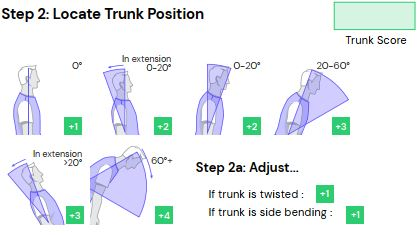
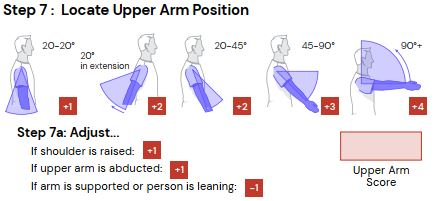
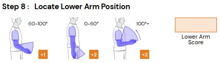
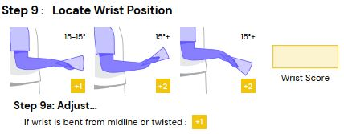

Upload Foto Postur
Klik pada foto untuk menandai titik tubuh
Grup A
Step 1: Locate Neck Position

Tentukan posisi leher (0–20°, >20°, ekstensi).
Adjust (Step 1a): jika leher twisted / side bending → +1
Step 2: Locate Trunk Position

Tentukan posisi punggung (tegak, fleksi, ekstensi).
Adjust (Step 2a): trunk twisted / side bending → +1
Step 3: Legs

Tentukan posisi kaki (dua kaki, satu kaki, fleksi).
Step 4: Look-up Posture Score (Table A)
Gunakan nilai dari Step 1–3 untuk mencari skor di Table A.
Step 5: Add Force / Load Score
Tambahkan skor beban (<5 kg, 5–10 kg, >10 kg).
Jika ada shock / force cepat → +1
Step 6: Score A
Jumlahkan skor Step 4 + Step 5 → Score A.
Gunakan Score A untuk baris Table C.
Grup B
Step 7: Locate Upper Arm Position

Tentukan sudut lengan atas.
Adjust (Step 7a): bahu terangkat / abduksi → +1
Jika lengan disangga → -1
Step 8: Locate Lower Arm Position
Tentukan sudut lengan bawah (60–100°, <60°, >100°).
Step 9: Locate Wrist Position

Tentukan posisi pergelangan.
Adjust (Step 9a): wrist bent / twisted → +1
Step 10: Look-up Posture Score (Table B)
Gunakan nilai Step 7–9 untuk mencari skor di Table B.
Step 11: Add Coupling Score
Tambahkan skor kualitas pegangan (baik, cukup, buruk).
Step 12: Score B
Jumlahkan skor Step 10 + Step 11 → Score B.
Gunakan Score B untuk kolom Table C.
Faktor Tambahan
Step 13: Activity Score
Tambahkan +1 jika:
• Postur statis > 1 menit
• Gerakan berulang (>4x/menit)
• Perubahan postur cepat / tidak stabil
Ringkasan Laporan
Metode: REBA (Rapid Entire Body Assessment)
Tanggal: